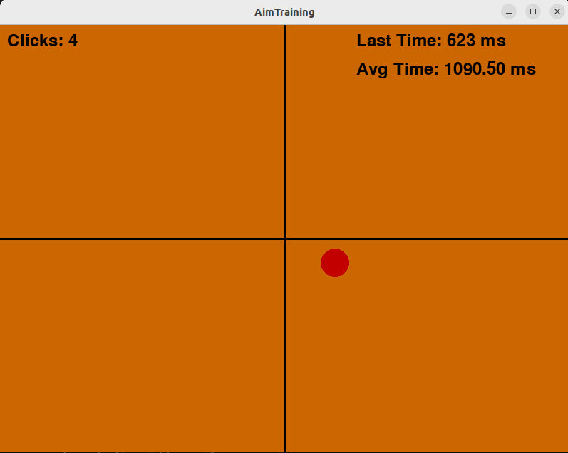

Projekt 1: Gra Aim CS2
Szczegółowy opis projektu gry Aim do CS2 napisanej w Pythonie z użyciem biblioteki pyGame.
Fragment kodu:
// Przykładowy fragment kodu gry
# Pętla gry
running = True
while running:
for event in pygame.event.get():
if event.type == pygame.QUIT:
running = False
elif event.type == pygame.VIDEORESIZE:
screen_width, screen_height = event.size
screen = pygame.display.set_mode((screen_width, screen_height), pygame.RESIZABLE)
elif event.type == pygame.MOUSEBUTTONDOWN:
mouse_x, mouse_y = event.pos
if (x - mouse_x) ** 2 + (y - mouse_y) ** 2 @lt;= radius ** 2:
x = random.randint(radius, screen_width - radius)
y = random.randint(radius, screen_height - radius)
click_count += 1
current_time = pygame.time.get_ticks()
time_since_last_click = current_time - last_click_time
last_click_time = current_time
time_between_clicks.append(time_since_last_click)
average_time = sum(time_between_clicks) / len(time_between_clicks) if time_between_clicks else 0
Projekt 2: Strona Portfolio
pis stworzenia responsywnej strony internetowej. Zastosowano HTML5 oraz CSS3, w tym Flexbox oraz media queries.
Fragment kodu:
/* Przykładowy fragment kodu CSS */
body {
font-family: Arial, sans-serif;
margin: 0;
padding: 0;
}
Projekt 3: Gra Go
Aplikacja pozwalająca na grę online w Go napisana w Java z użyciem JavaFX.
Fragment kodu:
// Przykładowy fragment kodu gry Go w Java
package com.grawgo.gra_w_go;
import javafx.application.Application;
import javafx.stage.Stage;
import org.example.scene.SceneManager;
public class App extends Application {
public static void main (String[] args){
launch(args);
}
@Override
public void start(Stage primaryStage){
SceneManager sceneManager = new SceneManager(primaryStage);
sceneManager.showMenuScene();
}
}